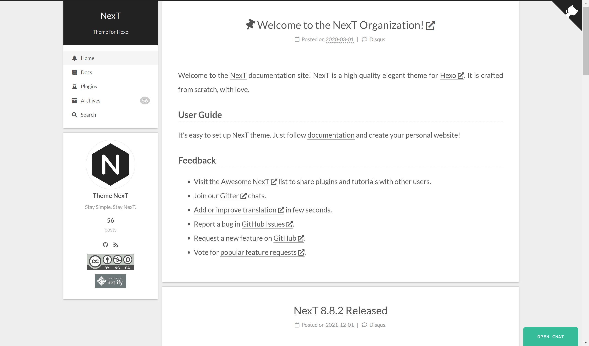
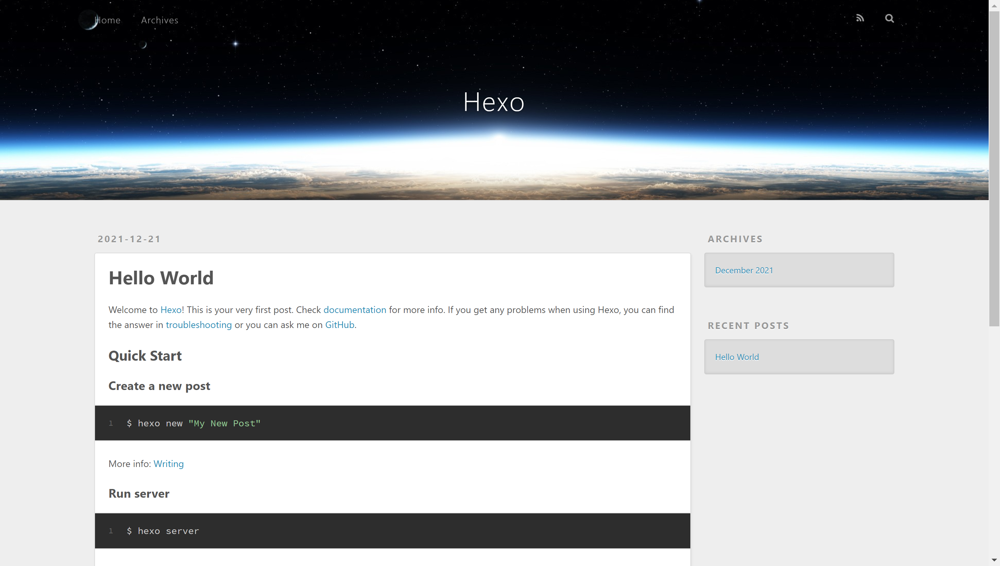

如何搭建个人博客？
前言
每一个技术同学都希望能够拥有一份自己的博客，有时候在上面写写东西，不需要太多，不需要炫彩夺目，简简单单就好，如果自己的文章能够帮助到他人那就更加欢喜不得了。
第一次看到 CSDN 上的写的一篇文章如此受大家的喜欢，甚是喜悦，后来又陆陆续续写了很多文章，不论是写代码时遇到的 bug 解决思路，还是刚学习某门语言时碰到的问题，亦或是学的某些算法等等。
收到 GitHub 上许多同学的点赞之后，也越来越喜欢开源自己写的 Project，同时 GitHub 上有着许许多多的有些仓库值得我们去学习。
在 CSDN 和 掘金 上写了这么些文章，但总是觉点欠缺点什么，前不久看到其他同学的博客，于是想着搭建自己的一份博客，一来可以方便内容的聚集，二来也算是满足自己的一个小小的愿望，谁不想要有自己的博客呢😄
选材
网上其实有很多的博客模板，我们也没有必要从零开始搭建一个博客，当然，如果有时间有能力的话，也未尝不可是一次很好的尝试呢，因为在尝试的过程中，你可能会遇到很多问题，而这些问题恰恰就是你学习的机会。
在这里，我选择的是 Hexo 博客模板再加上 Icarus 主题，选择 Hexo 博客模板是因为其支持 Markdown 编写文章，并且生态很好，对于主题的挑选随自己的心愿，可以到主题模块去探索符合自己口味的。
刚开始选择的主题是 NexT，长下面这样，其实还可以，自定义之后也可以做的很好看。
后来看到了 Icarus 主题，经过配置之后达到下面的效果，这才是我想要的主题嘛，简洁大方，界面UI也做的很不错。
步骤
下面假设已经预先安装好了 Node.js 和 Git，若尚未安装好，可以进入相应的官网进行下载安装，过程比较简单，这里不再赘述。
安装脚手架
Hexo 提供了脚手架，我们可以方便的创建博客，首先进行安装：
1 | $ npm install -g hexo-cli |
安装完成之后，如果执行 hexo -v 可以返回对应的版本号，则安装成功。
1 | $ hexo -v |
创建博客
首先执行 hexo init [name] 初始化博客。
1 | $ hexo init blog |
博客项目初始化完成之后，我们就已经搭建了一个很简单的博客网站了，运行 hexo server 或者 hexo s 命令，运行博客：
1 | $ hexo s |
样式如下，依个人看法，十分丑陋😂
编写文章
使用 hexo new [title] 即可创建一篇文章，使用 markdown 进行编写即可，创建的文件在 source/_posts/test.md。
如果需要引入图片的话，注意这里不能直接引入本地图片，可以首先创建一个界面，然后将图片放置在该目录中：
- 首先创建
images界面：hexo new page images，其实相当于多了二级路由/images - 将需要添加的图片放在 images 目录下，可以在其中再创建目录
- 使用绝对路径引用图片：比如
img标签的src应为/images/test.png，i/mages/blog/test.png
当然如果说想要直接引用本地文件，可以参考 asset-folders，首先将配置文件 _config.yml 中的 post_asset_folder 设置为 true，创建新文章时自动创建一个文件夹，这个资源文件夹将会有与这个文章文件一样的名字，需要的资源放在该目录中，即可通过相对路径访问了。举个栗子，文章 test.md 对应的test 目录下放了一个 go.png，那么在 test.md 中可以使用 <img src="go.png"> 进行引用。
美化
美化，当然要看主题了，Hexo 主要提供的是一个框架，我们可以任意选择主题，当然也可以自制主题，只不过成本比较高，下面以 Icarus 主题为例，演示如何设置主题。
首先下载对应的主题文件，这里推荐使用 git clone。
1 | git clone https://github.com/ppoffice/hexo-theme-icarus.git themes/icarus |
然后在 _config.yml 中配置主题为 icarus，或者使用命令 hexo config theme icarus 进行设置，然后重启即可，效果如下：
过程中可能有些模块没有安装，使用 npm install 或者 yarn add 添加即可。
部署
这里使用 GitHub Pages 进行部署，不需要自己购买服务器，当然如果想部署在自己的服务器也是可以的，推荐使用 Nginx 搭建，下面进行演示。
在 GitHub 创建一个仓库，命名为 <your name>.github.io，比如用户名为xiaoming 的同学应该命名为xiaoming.github.io。
然后在 _config.yml 中进行配置，这里注意需要把本地的 ssh 公钥添加到 GitHub 中。
1 | # 配置 url |
执行 npm run deploy，项目即可部署，其实就是相当于把打包后的文件通过 Git 上传到仓库中。进入代码仓库的 Settings > Pages，可以看到项目已经成功部署。
其他插件
Icarus 中支持丰富的插件和个性化配置，比如 百度统计、Latex公式、布局样式等等，同时也支持评论，使用 Gitalk 十分简单的就可以搭建一个评论系统，这些就留给读者慢慢探索了，其官方文档中也有详细说明。
生活杂笔，学习杂记，偶尔随便写写东西。